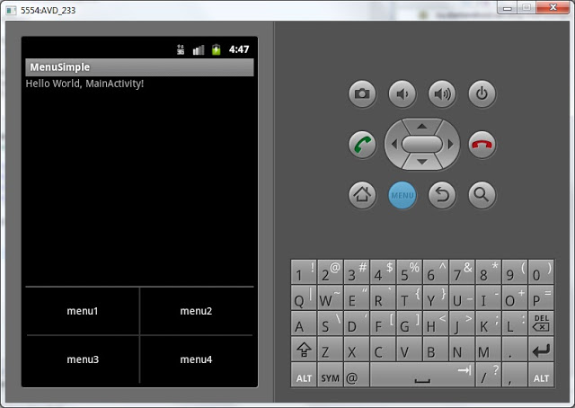

В этом уроке мы:
- создаем пункты меню
Что такое меню, думаю, нет смысла рассказывать. Оно отображается при нажатии кнопки Menu. Давайте создадим свое.
Создаем проект:
Project name: P0131_MenuSimple
Build Target: Android 4.0
Application name: MenuSimple
Package name: ru.startandroid.develop.menusimple
Create Activity: MainActivity
Откроем MainActivity.java. За создание меню отвечает метод onCreateOptionsMenu. На вход ему подается объект типа Menu, в который мы и будем добавлять свои пункты. Добавляются они просто, методом add. На вход методу подается текст пункта меню. Добавим 4 пункта.
public boolean onCreateOptionsMenu(Menu menu) {
// TODO Auto-generated method stub
menu.add("menu1");
menu.add("menu2");
menu.add("menu3");
menu.add("menu4");
return super.onCreateOptionsMenu(menu);
}Метод onCreateOptionsMenu должен вернуть результат типа boolean. True – меню показывать, False – не показывать. Т.е. можно было бы написать проверку какого-либо условия, и по итогам этой проверки не показывать меню передавая False. Пока нам это не нужно, поэтому поручаем этот выбор методу суперкласса, по умолчанию он возвращает True.
Сохраним все, запустим приложение и нажмем кнопку меню на эмуляторе.

Появилось 4 пункта меню. Нажатие на них ни к чему не приводит, т.к. не реализован обработчик. Обработчиком является Activity, а метод зовется onOptionsItemSelected. На вход ему передается пункт меню, который был нажат – MenuItem. Определить, какое именно меню было нажато можно по методу getTitle. Давайте выводить всплывающее сообщение с текстом нажатого пункта меню. На выходе метода надо возвращать boolean. И мы снова предоставляем это суперклассу.
public boolean onOptionsItemSelected(MenuItem item) {
// TODO Auto-generated method stub
Toast.makeText(this, item.getTitle(), Toast.LENGTH_SHORT).show();
return super.onOptionsItemSelected(item);
}public class MainActivity extends Activity {
/** Called when the activity is first created. */
@Override
public void onCreate(Bundle savedInstanceState) {
super.onCreate(savedInstanceState);
setContentView(R.layout.main);
}
@Override
public boolean onCreateOptionsMenu(Menu menu) {
// TODO Auto-generated method stub
menu.add("menu1");
menu.add("menu2");
menu.add("menu3");
menu.add("menu4");
return super.onCreateOptionsMenu(menu);
}
@Override
public boolean onOptionsItemSelected(MenuItem item) {
// TODO Auto-generated method stub
Toast.makeText(this, item.getTitle(), Toast.LENGTH_SHORT).show();
return super.onOptionsItemSelected(item);
}
}Определять нажатый пункт меню по тексту – это не самый лучший вариант. Далее будем делать это по ID. Но для этого надо немного по другому создавать меню.